This is all in some old guys backyard. It's really good
as he just lets you turn up and ride.
There's also a metal bowl/mini/vert type thing that i didn't get any
pictures of.
Anyway apparently this place is legendary around Hastings. First 360 whip
pulled here.
To be honest it looks a bit of a tip but i rides well and was fun.
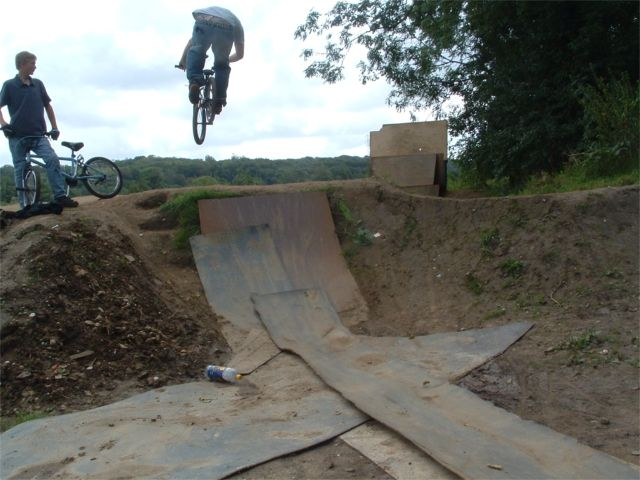
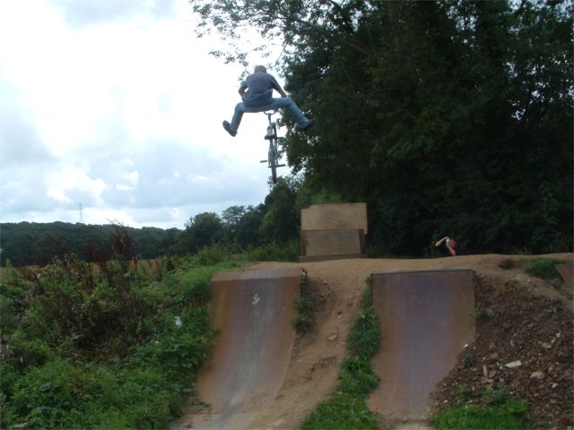
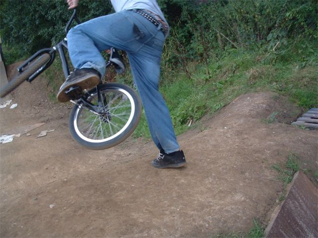
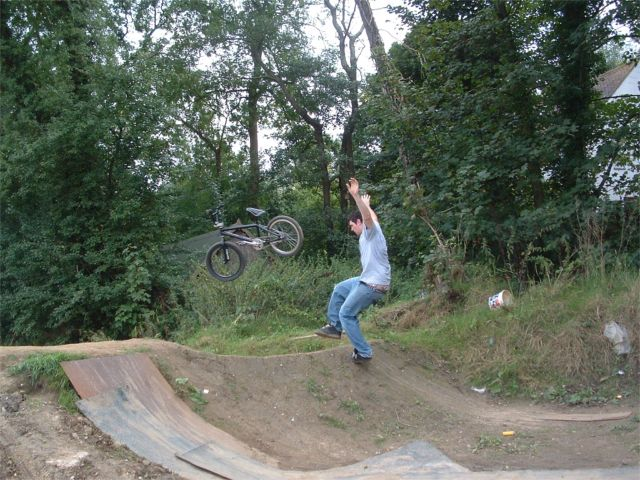
This was quite funny. Roger told Tom to go as fast as you can and he kind
of overshot just a tad.
Tom, desprate to keep in shot.
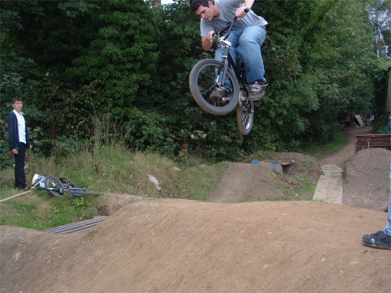
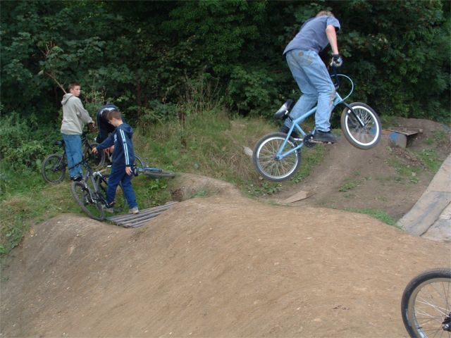
Roger 360 attempt. I was trying them all day and was nowhere near but I
think he got one.
On the other hand here is a Roger lookback attempt. I don't think he got
one, but I did.
No photo evidence for that though.
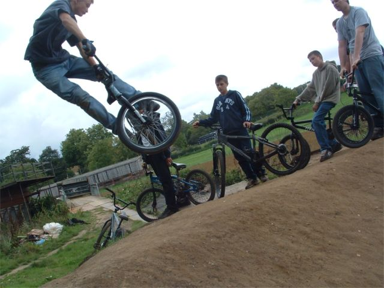
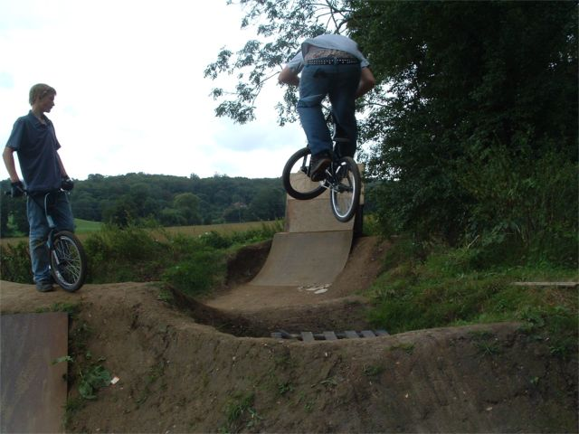
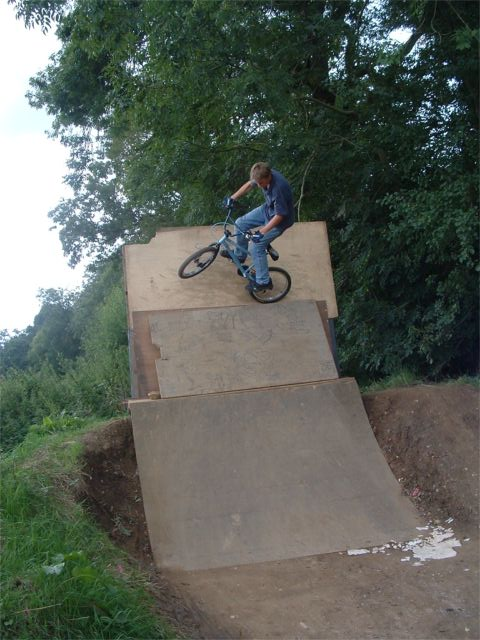
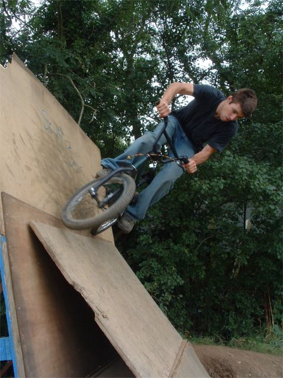
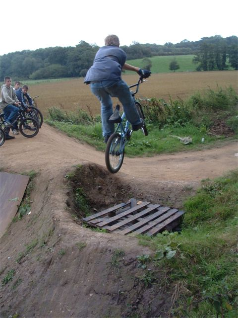
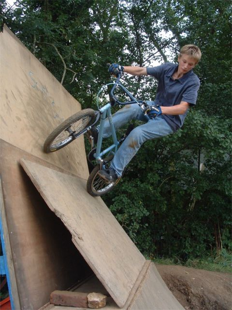
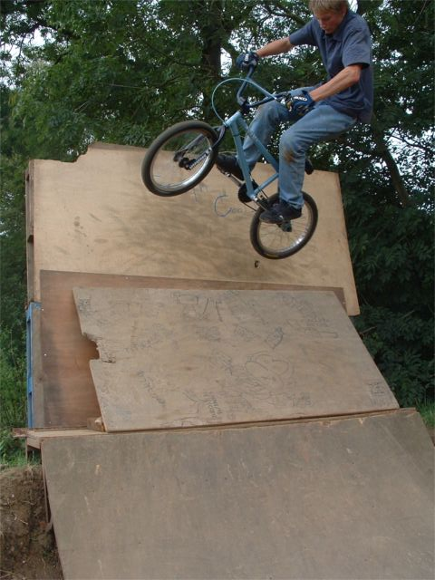
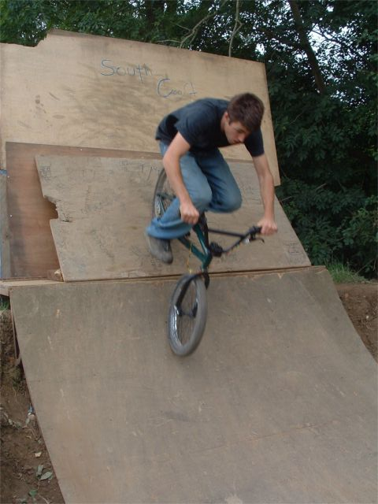
This wall thing was fun to nibble. I was trying Ruben wall rides and lots
of other trye tap, foot plant variations were going down. Until someone
too the board away.
Nigel was worried about doing the wall ride as it was only held up with
bricks and he thought it would collapse. It was ok though.
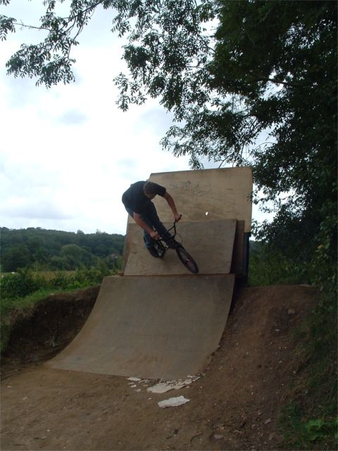
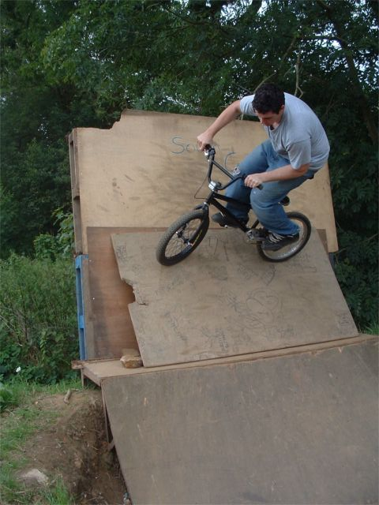
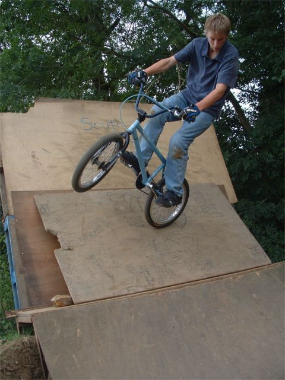
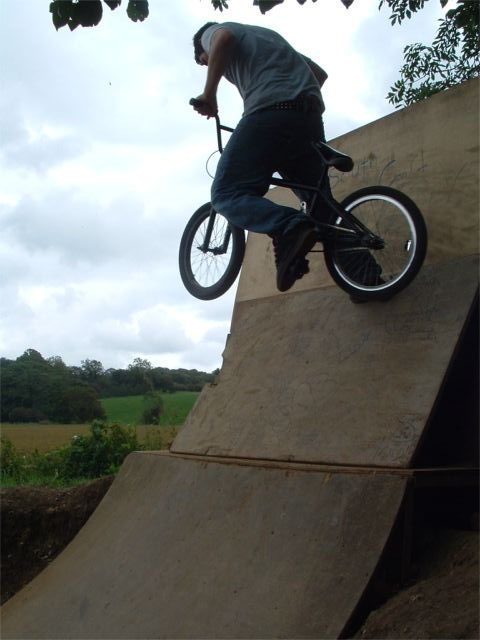
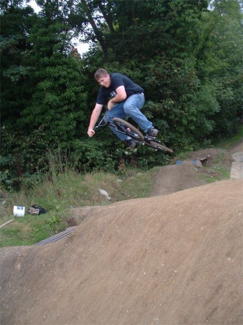
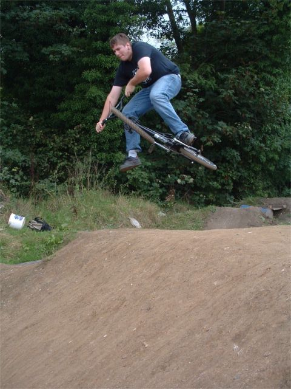
Nigel with some table/one foot table variations. Roger, xup and Tom, front
tyre tap. Oh any below that a murkin xup foot plant.
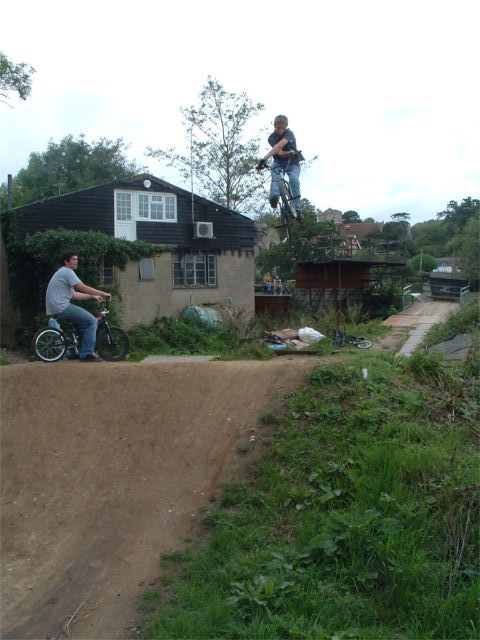
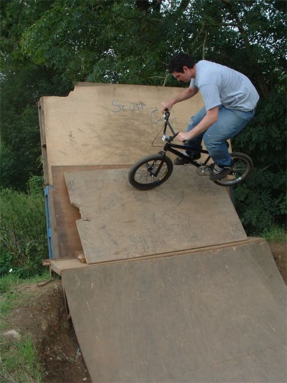
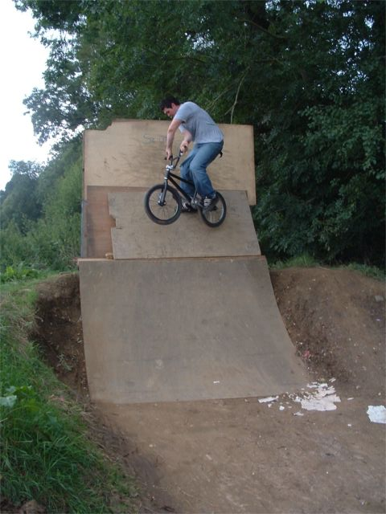